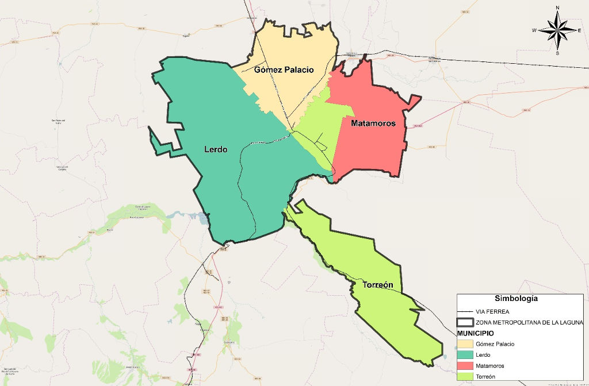

Las zonas metropolitanas son regiones donde las actividades cotidianas de trabajo, recreación vivienda y las actividades económicas sobrepasan sus límites territoriales, así como los límites político–administrativo de los municipios que la conforman.
En México existen 59 zonas metropolitanas con un total de 63;836,779 habitantes de acuerdo a la CONAPO. La Zona Metropolitana de La Laguna se ubica en el noveno lugar en población por debajo de Ciudad Juárez el Paso Texas y sobre Querétaro.
Las zonas metropolitanas pueden ser de tres tipos de acuerdo a su localización: Sus municipios se encuentran dentro de un mismo estado, son interestatales porque sus municipios colindan con dos o más estados y sus municipios colindan con fronteras internacionales.
La Zona Metropolitana de la Laguna se encuentra entre las diez zonas en el rango de 1 millón a 4;999,999 habitantes, de acuerdo con la CONAPO. Es de tipo interestatal, ya que incluye dos municipios del estado de Coahuila y dos municipios del estado de Durango.
Cuenta con una superficie territorial total de 502,799.38 hectáreas de las cuales 473,142.14 son de superficie rural y 29,657.24 de superficie urbanizada, lo que corresponde a que el 94.10 % del territorio es rural y el 5.90% es urbano.
La población censada de acuerdo a INEGI en 2010 es de 1;215,817 habitantes en la ZML, (al 2015 según datos de CONAPO es de 1;313,161 habitantes) distribuidos de la siguiente manera: 998,090 habitantes que representa el 82.19% vive en el área urbana y 217,727 habitantes que representan el 17.90% viven el área rural.
Problemáticas comunes
El nacimiento de zonas metropolitanas en las zonas urbanas trajo consigo diversos problemas como la contaminación del medio ambiente, escasez de agua, la inseguridad, deficiencia en servicios públicos, insuficiencia en el transporte urbano adecuado y congestionamiento vehicular.
Jordi Borja y Castells mencionan que las ciudades sufren de 3 problemáticas primordiales como son: disolución, fragmentación y privatización.
Disolución por una urbanización desigual, fragmentación por la producción de un territorio urbano disperso y cortado por vías de comunicación; y privatización por la apropiación en manos de los grandes promotores inmobiliarios, que se benefician de la plusvalía que genera la ciudad. En contraparte las administraciones públicas se ven rebasadas por la constante demanda ciudadana de acceder a una vida de calidad, para el disfrute de los espacios públicos, el libre tránsito con una movilidad incluyente.
En lo referente a las problemáticas que estos autores comentan, la Zona Metropolitana de Laguna no es ajena a estos, tiene problemas de disolución, fragmentación y privatización.
Disolución por una urbanización desequilibrada que autoriza fraccionamientos y desarrollos en la periferia de la mancha urbana, con problemas en el aumento desproporcional entre la superficie urbanizada y el crecimiento poblacional, que abandona los centros urbanos buscando una mejor oferta de vivienda.
Lo anterior nos lleva a tener una fragmentación por la misma dispersión con vías de comunicación que sirven como bordes que separan la continuidad de la ciudad y la privatización debido a los terrenos que se quedan sin fraccionar y solo especulan el mejor momento de salir al mercado inmobiliario cuando estos incrementan su valor.
A la vez se construyen asentamientos cerrados con bardas, que contienen en lo privado el espacio púbico o las áreas verdes, solo para el disfrute se sus vecinos. Lo que lleva a una disminución considerable del espacio que realmente es público en la ciudad.
Consecuencia que trae consigo más contaminación del aire y de los recursos no renovables que tenemos en la región.
Retos hacia el futuro
El Programa Regional de Desarrollo del Norte 2014-2018 de la SEDATU menciona que dentro de las Zonas metropolitanas de la Región Norte del país las más importantes son Monterrey, Tijuana, Ciudad Juárez y La Laguna.
Se espera un fuerte crecimiento de esas ciudades hacia el 2030, lo que conlleva retos en infraestructura urbana de comunicaciones, transporte público, ordenamiento territorial, vivienda y agua, entre otros.
La unión de los tres factores mencionados, aunado a la demanda de infraestructura para el año 2030 como menciona SEDATU, tiene un alto costo para las administraciones públicas que deben de proveer los bienes, seguridad y servicios que demanda la sociedad a un alto costo.
Lo que nos lleva a asumir el reto de concertar una coordinación en temas metropolitanos, un tema de máximo interés en el debate urbano nacional y que en la ZML se agudiza por su localización interestatal.
Se requiere de una concertación entre los cuatro municipios de los dos estados (Torreón, Matamoros, Gómez Palacio y Lerdo) por medio de una agenda de temas metropolitananos, en los ejes de: Buen Gobierno, Desarrollo Económico, Desarrollo Social, Entorno Urbano, Movilidad, Medio Ambiente y Sustentabilidad que permitan acercarse a una visión común como Zona Metropolitana de La Laguna.
Si bien el municipio de Torreón ha trabajado en hacer una planeación municipal desde una visión metropolitana, es necesario concretar entre los gobiernos de los estados y los municipios de Coahuila y Durango, acuerdos de homologación de marcos legales que faciliten la aplicación de normas específicas para programas y proyectos de obras comunes para el ordenamiento y beneficio de la ciudadanía.
La Zona Metropolitana de La laguna se ubica en el 9º Lugar en población
| Lugar | Zona Metropolitana | Habitantes año 2010 |
|---|---|---|
| 8º. | Cd. Juárez el Paso Tx. | 1,332,131 |
| 9º. | La Laguna | 1,215,817 |
| 10º. | Querétaro | 1,097,025 |
Mapa de la Zona Metropolitana de La Laguna
